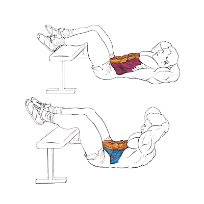

Упражнение на верхнюю часть пресса.
Исходное положение:
Руки за головой или скрещены перед собой (также можно вытянуть их вверх).
Техника выполнения:
Сожмите мышцы пресса и отрывайте плечи от пола на выдохе.
На вдохе опуститесь вниз.
Амплитуда движения очень маленькая, низ спины всегда прижат к полу.
Рекомендации:
Старайтесь сделать как можно больше повторений, пока не появится "режущая" боль в области пресса.